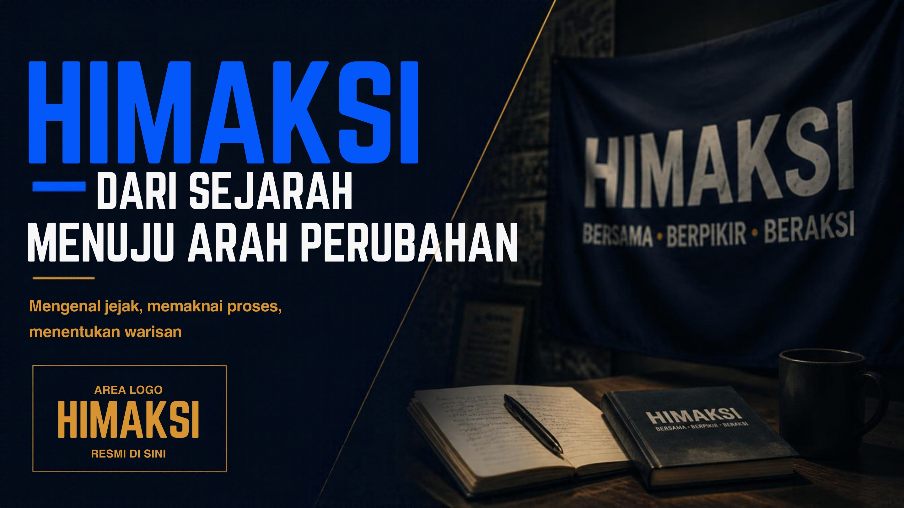
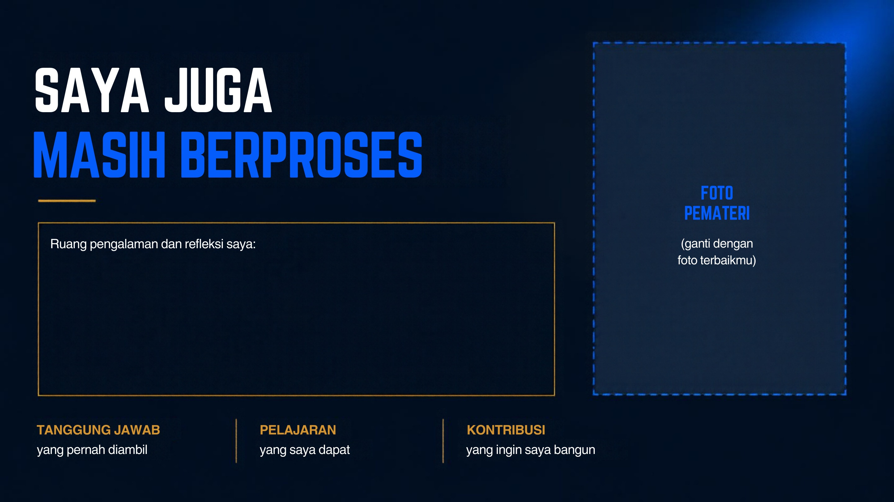

Berawal dari kebutuhan
Pertumbuhan mahasiswa Akuntansi menghadirkan kebutuhan akan ruang aspirasi dan hubungan akademik yang lebih kuat.
Mengenal jejak, memaknai proses, menentukan warisan. Sebuah perjalanan untuk memahami apa yang kita jaga, apa yang kita bangun, dan apa yang ingin kita tinggalkan.

Ini bukan sekadar rangkaian halaman. Ini adalah ruang untuk berhenti sejenak, melihat ke belakang, dan memilih langkah ke depan.
Jabatan hanya sementara.
Yang penting adalah apa yang kita bangun bersama.
Sejarah bukan hanya tanggal yang diingat. Sejarah adalah alasan mengapa sebuah wadah dibentuk dan tanggung jawab yang diteruskan oleh setiap generasi.
Pertumbuhan mahasiswa Akuntansi menghadirkan kebutuhan akan ruang aspirasi dan hubungan akademik yang lebih kuat.
Pemberitahuan MUBES, diskusi, koordinasi, dan dukungan akademik menjadi bagian dari proses pembentukan HIMAKSI.
HIMAKSI diharapkan menjadi ruang bertumbuh, mengembangkan kompetensi, menyalurkan aspirasi, dan berkontribusi aktif.
Dirangkum dari dokumen “Sejarah Himpunan Mahasiswa Akuntansi (HIMAKSI) UNPAM Serang”.

Kami tidak berdiri di sini karena hebatnya satu orang. Kami sampai di titik ini karena ada tim yang saling mendukung, mau belajar, dan terus berusaha memberikan yang terbaik untuk HIMAKSI.
Bersama-sama berusaha menjalankan visi dan misi HIMAKSI, menghadirkan dampak nyata, dan menciptakan kenangan berharga yang layak menjadi sejarah.
Karena HIMAKSI bukan tentang siapa yang paling terlihat. HIMAKSI adalah tentang semua yang ikut bekerja, bertumbuh, menjaga, dan meninggalkan kebaikan bersama.
Nilai apa yang membuat HIMAKSI tetap berarti?
Kebiasaan apa yang perlu kita evaluasi bersama?
Kontribusi nyata apa yang bisa kita mulai hari ini?
Apa yang ingin kita tinggalkan untuk generasi berikutnya?